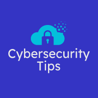
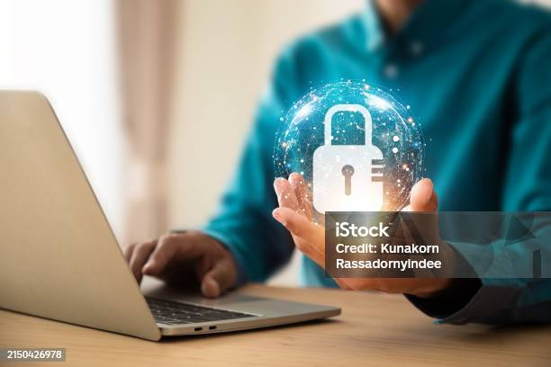
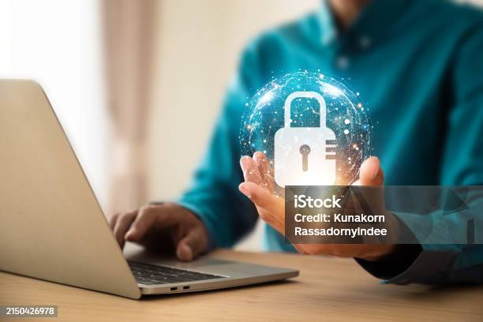

Overview
Purpose
Our mission is to empower individuals and organizations to safeguard their digital lives. We provide practical, actionable cybersecurity tips and advice to help protect against cyber threats, safeguard sensitive information, and build a more secure online environment.
Audience
My cybersecurity sentinel is designed for a diverse audience, including tech-savvy individuals, small business owners, and the general public who want to enhance their online security.
Branding
Website Logo
Style Guide
Color Palette
| Primary | Secondary | Accent 1 | Accent 2 |
|---|---|---|---|
Typography
Heading Font: Arial
Paragraph Font: Poppins
Our Goal
Cybersecurity Sentinel: Your Shield Against the Digital Dark In today's interconnected world, where our lives increasingly revolve around technology, cybersecurity has become a paramount concern. From personal data breaches to corporate espionage, the risks are real and ever-present. Cybersecurity Sentinel aims to empower individuals and organizations alike to navigate the complex digital landscape with confidence and security.
Why Visit Cybersecurity Sentinel?
We provide clear, concise, and up-to-date information on a wide range of cybersecurity topics, from basic best practices to advanced threat mitigation strategies. Our practical advice helps you implement effective security measures in your daily life and work.Ahead of the Curve: We keep you informed about the latest cyber threats and vulnerabilities, enabling you to proactively protect yourself. Our team of cybersecurity professionals shares their knowledge and experience to provide you with expert guidance.
Looking to resolve an issue?
If you experience a cybersecurity incident, such as a data breach or malware infection, seeking professional help is crucial. A cybersecurity expert can assess the situation, identify potential threats, and implement measures to mitigate the damage. Remember, cybersecurity is an ongoing process. By following these tips and seeking professional help when needed, you can significantly reduce your risk of falling victim to cyberattacks and protect your valuable information.
Navigation
Site Map
Content
Home page
Protecting What Matters Most: Your Digital World In todays hyper-connected world, cybersecurity is not just a necessity—it's a fundamental pillar of trust. At Cybersecurity Sentinel, we empower businesses and individuals to secure their digital assets, safeguard sensitive data, and stay ahead of evolving threats.
Why Cybersecurity? From sophisticated cyberattacks to everyday online risks, the digital landscape is full of potential threats that can disrupt operations, damage reputations, and compromise personal privacy. At Cybersecurity Ssentinel<, we are committed to providing proactive solutions that defend against these threats, ensuring that your information stays protected and your business stays resilient. Our Services Threat Detection & Prevention Stay one step ahead of hackers with our advanced threat monitoring and early warning systems. We provide real-time alerts and swift action to neutralize threats before they can cause harm. Data Protection Safeguard your sensitive data with robust encryption, access controls, and secure storage solutions designed to protect against unauthorized access and data breaches. Incident Response & Recovery In the event of a cyberattack, our rapid response team is ready to investigate, mitigate, and restore operations. We ensure minimal disruption and help you recover swiftly. Compliance & Risk Management Stay compliant with the latest regulations and industry standards. We offer risk assessments, gap analysis, and tailored solutions to meet your organizations unique cybersecurity needs. Managed Security Services Let us handle your cybersecurity operations so you can focus on what matters. Our team provides continuous monitoring, threat hunting, and response—24/7.
Why Choose Us? Expertise You Can Trust With years of experience and a team of certified security professionals, we provide cutting-edge solutions tailored to your specific needs. Advanced Technology We use the latest in cybersecurity technology to protect against the most sophisticated threats, ensuring your business stays secure. Comprehensive Support Whether you need proactive monitoring, incident response, or strategic consulting, were here to support you every step of the way. Proven Results Join hundreds of businesses that rely on us for reliable, effective cybersecurity solutions that reduce risk and enhance operational resilience. Your Security Starts Here Cybersecurity is a journey, not a destination. Lets take the next step together. Whether you're looking to safeguard your business or protect your personal information, Cybersecurity Sentinel is your trusted partner in the digital age. Get in Touch to learn how we can help you strengthen your cybersecurity posture today.
Images for the Home page
 

Tips
Essential Cybersecurity Tips for Everyone Cybersecurity is a shared responsibility. Whether you're an individual or a business, adopting good habits online can prevent costly breaches, identity theft, and data loss. Here are essential cybersecurity tips that everyone should know:
1. Use Strong, Unique Passwords Avoid using simple or reused passwords. Create passwords that are long, complex, and include a mix of uppercase and lowercase letters, numbers, and symbols. Consider using a password manager to keep track of them securely.
Tip: Use multi-factor authentication (MFA) wherever possible to add an extra layer of security to your accounts. 2. Keep Software & Devices Up-to-Date Regular software updates contain important security patches that address vulnerabilities. Whether it's your operating system, apps, or antivirus software, make sure they are always updated to protect against known threats.
Tip: Enable automatic updates to make sure you don't miss any critical security patches. 3. Be Cautious with Emails & Links Phishing emails are one of the most common ways cybercriminals steal sensitive information. Never click on links or download attachments from unknown or suspicious senders.
Tip: If in doubt, hover over the link to see the full URL and verify its legitimacy before clicking. 4. Use a Secure Wi-Fi Network Public Wi-Fi networks are often unsecured and can expose your data to hackers. Always use a Virtual Private Network (VPN) when accessing sensitive information over public Wi-Fi.
Tip: Set up a password for your home Wi-Fi and avoid using default router settings. 5. Back Up Your Data Regularly Ransomware attacks can lock you out of your data, and hard drive failures can happen unexpectedly. Regularly back up your important files and store them securely in the cloud or on an external device.
Tip: Implement the 3-2-1 backup rule: three copies of your data, two different types of storage, and one off-site backup. 6. Protect Your Devices with Antivirus Software Install reputable antivirus software on all of your devices, including smartphones, tablets, and laptops. It helps detect and remove malicious software that could compromise your security.
Tip: Regularly scan your devices for viruses and malware, especially after downloading new apps or files. 7. Be Mindful of What You Share Online Cybercriminals can use information shared on social media to craft targeted attacks. Be cautious about the personal details you post, such as your location, phone number, or answers to security questions.
Tip: Review your privacy settings and limit what others can see about you online. 8. Monitor Your Accounts Regularly Regularly check your bank statements, credit reports, and online accounts for any unusual activity. Early detection can help minimize damage in the event of a breach.
Tip: Set up account alerts to notify you of any suspicious transactions or login attempts. 9. Educate Your Team (For Businesses) If you run a business, make cybersecurity training a part of your workplace culture. Ensure that your employees know how to spot phishing attempts, use strong passwords, and protect sensitive data.
Tip: Conduct regular cybersecurity drills to test your team’s response to simulated cyber threats. 10. Encrypt Sensitive Data Encryption converts data into a code that can only be read by authorized users. If you're storing sensitive data, make sure it’s encrypted both in transit and at rest.
Tip: Use secure communication tools for sending sensitive information online, such as encrypted email services or secure file-sharing platforms. Stay Safe in the Digital World By following these simple yet effective cybersecurity tips, you can significantly reduce the risks of cyber threats. Cybersecurity is an ongoing effort, so make these practices a regular part of your digital routine to stay safe online.
Images for the Page 2


Security
Why Security for Cybersecurity Matters In the ever-evolving digital world, securing your cybersecurity practices is just as important as securing your network or devices. Whether you're an individual protecting your personal data or a business safeguarding client information, maintaining robust cybersecurity protocols helps prevent breaches, data loss, and operational disruptions. By adopting these security tips and continuously monitoring and updating your security practices, you can stay ahead of cyber threats and reduce your exposure to cyberattacks.
Essential Security Tips for Cybersecurity Professionals & Individuals In the world of cybersecurity, protecting your data, systems, and network is not just about avoiding attacks—it's about being prepared and proactive. These security for cybersecurity best practices are crucial for anyone working in the field or anyone responsible for safeguarding sensitive information. Whether you're securing personal devices or managing an enterprise network, these strategies will help mitigate risks and strengthen defenses.
1. Implement Layered Security (Defense in Depth) A single layer of protection isn’t enough. Use multiple layers of security measures—firewalls, encryption, intrusion detection systems (IDS), multi-factor authentication (MFA), and antivirus software. If one layer is breached, the others can still protect your assets.
Tip: Always use the principle of "defense in depth" to secure both your data and your network infrastructure. 2. Secure Your Network Infrastructure Cybersecurity starts with securing your network. This means properly configuring firewalls, routers, and switches to block unauthorized access. Use strong encryption protocols (e.g., WPA3 for Wi-Fi) to protect data transmission and implement Virtual Private Networks (VPNs) for remote connections.
Tip: Regularly update network passwords and segregate critical systems from less sensitive devices. 3. Implement Zero Trust Architecture The Zero Trust model assumes that every device, user, and application—whether inside or outside the network—should be treated as untrusted until verified. Always verify who and what is accessing your systems before granting access, and enforce the principle of least privilege.
Tip: Never trust, always verify. Restrict access based on need-to-know and continuously monitor activities for unusual behavior. 4. Encrypt All Sensitive Data Whether data is in transit or at rest, encryption is crucial for protecting sensitive information from unauthorized access. Use end-to-end encryption for communications and ensure that sensitive data stored on servers is properly encrypted.
Tip: Use strong encryption standards like AES-256 and ensure keys are stored securely. 5. Regularly Update & Patch Systems Attackers frequently exploit vulnerabilities in outdated software and systems. Regularly update operating systems, applications, and security software to fix known vulnerabilities and improve defenses.
Tip: Automate patching wherever possible to minimize the time systems are exposed to unpatched vulnerabilities. 6. Perform Vulnerability Scanning & Penetration Testing Conduct regular vulnerability assessments and penetration testing to identify weaknesses in your system before attackers do. By simulating real-world attacks, you can identify potential entry points and mitigate vulnerabilities early.
Tip: Schedule regular penetration tests and vulnerability scans, and address any weaknesses immediately. 7. Secure Your Endpoints & Devices Endpoints (like laptops, smartphones, and tablets) are prime targets for cybercriminals. Ensure they are secured with antivirus software, firewalls, and full disk encryption. Use mobile device management (MDM) solutions to monitor and control access to sensitive data on company-issued devices.
Tip: Require all devices to be password-protected, and disable features like Bluetooth and USB ports when not in use. 8. Monitor & Respond to Security Incidents Cybersecurity isn't just about prevention—it's also about being ready to respond when an attack happens. Implement continuous monitoring with Security Information and Event Management (SIEM) tools to detect suspicious activities in real time. Create a well-defined incident response plan to mitigate damages.
Tip: Regularly test your incident response plan to ensure your team can act swiftly and effectively in the event of a breach. 9. Educate and Train Users Regularly Humans are often the weakest link in cybersecurity. Regularly educate and train employees, contractors, and partners on security best practices, phishing attacks, password hygiene, and how to recognize suspicious activity.
Tip: Conduct phishing simulations and cybersecurity awareness programs to build a culture of security. 10. Backup Critical Data and Systems Data loss can happen due to hardware failures, ransomware attacks, or human error. Regularly back up all critical data and store backups securely. Implement a disaster recovery plan to ensure quick restoration of systems in case of an incident.
Tip: Store backups off-site or use cloud-based solutions that offer automated backup and encryption. 11. Use Strong Authentication Practices Passwords alone are not enough to protect sensitive information. Always enforce multi-factor authentication (MFA) for critical systems and accounts. This adds an additional layer of security by requiring multiple verification methods, such as biometrics or OTPs (one-time passwords).
Tip: Use hardware security keys (e.g., YubiKey) or biometric authentication where possible for the highest security. 12. Secure Cloud Environments With the increasing adoption of cloud services, it's important to apply strong security practices to cloud environments. Use cloud access security brokers (CASBs), configure access controls, and ensure that data stored in the cloud is encrypted.
Tip: Regularly audit your cloud environments for security gaps and misconfigurations.
Images for the Page 3


Wireframes
Home

Tips

Security
[Any additional details about page 3 that the wireframe does not make clear]